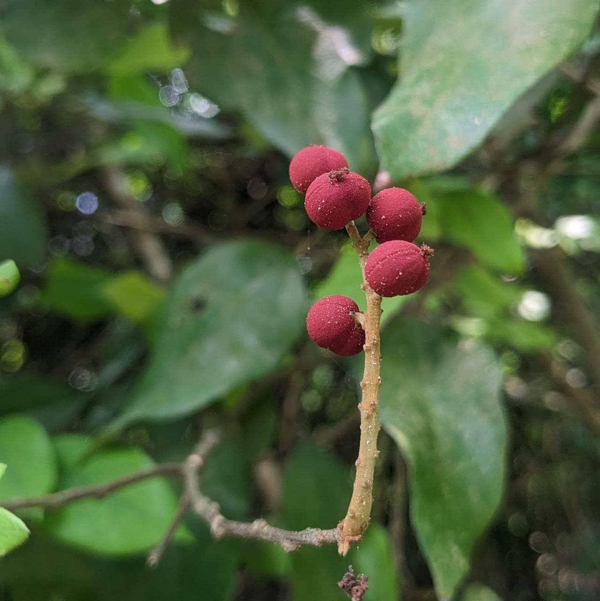
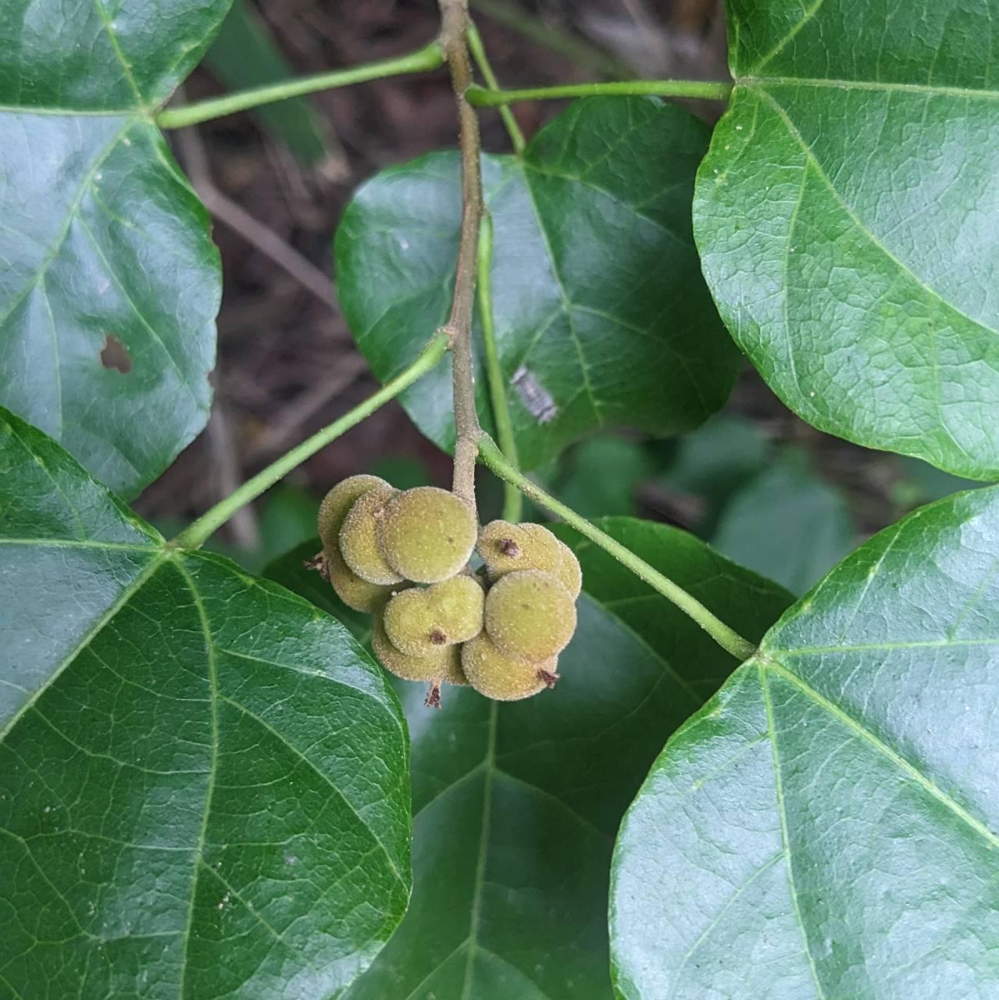
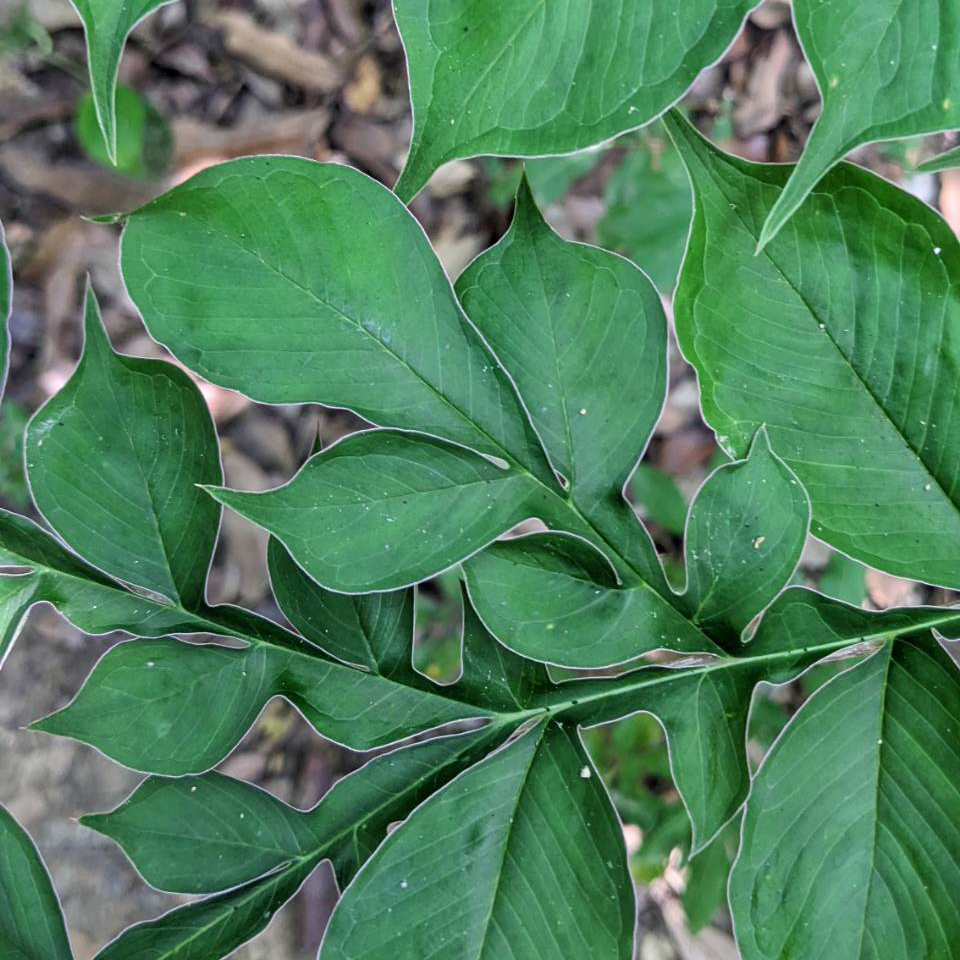

看到ㄉ植
依葉脈的不同可分為單子葉草本、雙子葉草本及草質藤本。可分為一年生、二年生和多年生草本
通常具乳汁，花的形狀是杯狀聚傘形
蟲屎

扛香藤

粗糠柴
常有球根莖、葉形葉脈樣式多、植物開花時會散發類似腐臭味，單子葉開花植物
魔芋

依形態不同，分喬木、灌木、木質藤本 (藤木)。木本植物是木材的來源，均為多年生植物
大部分是灌木或喬木，有強烈香氣，全體含有揮發油、葉上會有透明小點是油腺
烏柑仔

莖幹細長、不能支持自身重量而直立生長，需藉助支持物 (樹、牆) 攀緣或匍匐於地面，大部分是有花植物
還沒有東東
...
NOTE
2023/06/25
莖幹細長、不能支持自身重量而直立生長，只能藉助支持物(樹、牆等)攀緣向上生長，或匍匐於地面生長的一類植物，大部分藤本植物都是有花植物。
2023/06/25
植物體柔軟，莖內的木質部不發達，沒有形成層。依葉脈的不同可分為單子葉草本、雙子葉草本及草質藤本。